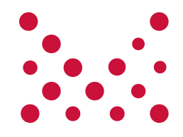

MC Open Lab.#7
2018年12月20日（木）
Web Creators MeetUp
クリスマス ＆ 忘年会 ビアバッシュLT会
Web業界 2018 振り返り
クイズ！
Q1. UIデザインツール
2018年度はUIデザインツールが広く広まったが、Windowsで利用できないのは？
a. Adobe XD
b. Figma
c. Sketch
Q1. UIデザインツール
2018年度はUIデザインツールが広く広まったが、Windowsで利用できないのは？
a. Adobe XD
b. Figma3.0
c. Sketch
Sketch 以外はWindowsで利用できます。
Q2. Google
2018年11月1日から8日付近にGoogleで大きな順位変動がありました。これを通称何アップデートと呼んだ？
a. パンダ
b. ペンギン
c. ハロウィン
Q2. Google
2018年11月1日から8日付近にGoogleで大きな順位変動がありました。これを通称何アップデートと呼んだ？
a. パンダ
b. ペンギン
c. ハロウィン
10月31日のハロウィンの日にGoogleの検索結果に大きなランキング変動が見られた。
Q3. AR
「拡張現実」実在する風景にバーチャルの視覚情報を重ねて表示することで、目の前にある世界を“仮想的に拡張する”というものであるが、ARの「A」はどれ？
a. Amazon
b. Augmented
c. authority
Q3. AR
「拡張現実」実在する風景にバーチャルの視覚情報を重ねて表示することで、目の前にある世界を“仮想的に拡張する”というものであるが、ARの「A」はどれ？
a. Amazon
b. Augmented
c. authority
ARとは「Augmented Reality（アグメンティッド・リアリティ）」の略
Q4. アプリ
質屋アプリと呼ばれ話題になり、DMMに70億円で買収されたことでも話題になったアプリの名前は？
a. CAFE
b. CACHE
c. CASH
d. MONEY
e. ZAIM
f. PayPay
Q4. アプリ
質屋アプリと呼ばれ話題になり、DMMに70億円で買収されたことでも話題になったアプリの名前は？
a. CAFE
b. CACHE
c. CASH
d. MONEY
e. ZAIM
f. PayPay
CASH（キャッシュ）（https://cash.jp/）は、DMM.com が昨年10月31日に同社を約70億円で買収したが、5億円で全株式を光本社長に5億円で売却（2018/11/7）
Q5. 人工知能（AI）
ディープラーニングの手法は様々あるが、その中で敵対的生成ネットワークを意味する教師なし学習モデルはどれか？
CNN
DQN
GAN
Q5. 人工知能（AI）
ディープラーニングの手法は様々あるが、その中で敵対的生成ネットワークを意味する教師なし学習モデルはどれか？
CNN
DQN
GAN
最近注目されている技術の1つに、「敵対的生成ネットワーク」（Genera tive Adversarial Networks。以下、GAN）がある。GANは生成モデルの一種であり、データから特徴を学習することで、実在しないデータを生成したり、存在するデータの特徴に沿って変換できる。
Q6. 消費者調査
2018年第2四半期のグローバルコマース調査レポートによると、日本のネット売上げでスマートフォンとタブレット経由の売り上げが前年同期比3％増となり何パーセントになったか？
35％
45％
55％
65％
75％
85％
Q6. 消費者調査
2018年第2四半期のグローバルコマース調査レポートによると、日本のネット売上げでスマートフォンとタブレット経由の売り上げが前年同期比3％増となり何パーセントになったか？
35％
45％
55％
65％
75％
85％
日本の状況をみると、スマートフォンとタブレット経由の売り上げが前年同期比3％増となり全体の55％を占めた。デバイス別では、スマートフォン経由の売り上げが7％増となった一方、タブレットは2％減、PCは7％減となっている。(2018年10月24日)